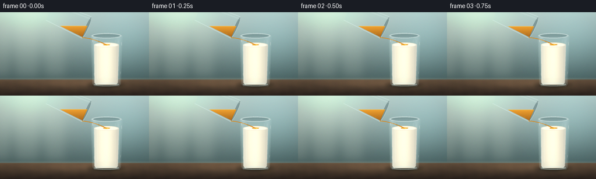
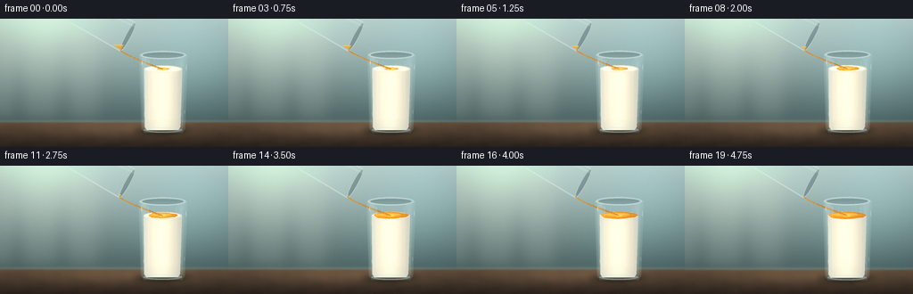
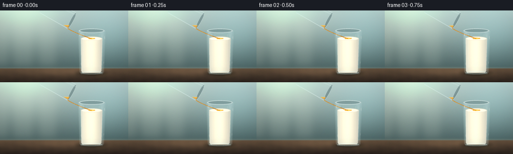
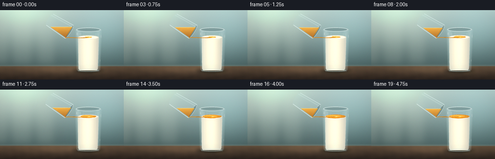
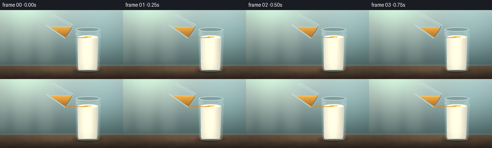
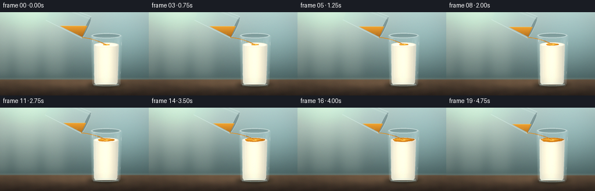
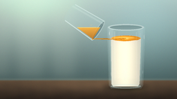

CODING AGENTS AS PIXEL WORLD MODELS
traex/DeepSeek-V4.1-Flash · material_0018
点击播放 · 原生 RGB 像素
逐轮保存的候选
回放视频、检查图与代码变化。
每份候选均可单独播放。实际图片检查记录在下方工具轨迹中。
候选 01播放与检查图
点击播放 · 原生 RGB 像素


展开代码变化
--- 上一保存版本
+++ 本次保存版本
@@ -0,0 +1,570 @@
+"""Procedural RGB video: oil poured gently into a glass of milk."""
+
+from __future__ import annotations
+
+import math
+from pathlib import Path
+
+import numpy as np
+from PIL import Image, ImageDraw, ImageFilter
+
+import artifact_io
+
+
+W, H = 256, 144
+FRAMES = 20
+FPS = 4.0
+S = 4
+RW, RH = W * S, H * S
+
+rng = np.random.default_rng(20261111)
+
+
+def world_points(points):
+ return [(float(x) * S, float(y) * S) for x, y in points]
+
+
+def polygon_mask(points, blur=0.0):
+ image = Image.new("L", (RW, RH), 0)
+ ImageDraw.Draw(image).polygon(world_points(points), fill=255)
+ if blur:
+ image = image.filter(ImageFilter.GaussianBlur(blur * S))
+ return np.asarray(image, dtype=np.float32) / 255.0
+
+
+def line_mask(points, width, blur=0.0):
+ image = Image.new("L", (RW, RH), 0)
+ ImageDraw.Draw(image).line(
+ world_points(points), fill=255, width=max(1, round(width * S)), joint="curve"
+ )
+ if blur:
+ image = image.filter(ImageFilter.GaussianBlur(blur * S))
+ return np.asarray(image, dtype=np.float32) / 255.0
+
+
+def ellipse_mask(cx, cy, rx, ry, angle=0.0, blur=0.0):
+ radius = max(rx, ry) + 2
+ x0 = max(0, int((cx - radius) * S))
+ x1 = min(RW, int((cx + radius) * S) + 2)
+ y0 = max(0, int((cy - radius) * S))
+ y1 = min(RH, int((cy + radius) * S) + 2)
+ mask = np.zeros((RH, RW), dtype=np.float32)
+ if x1 <= x0 or y1 <= y0:
+ return mask
+ yy, xx = np.mgrid[y0:y1, x0:x1]
+ dx = (xx + 0.5) / S - cx
+ dy = (yy + 0.5) / S - cy
+ ca, sa = math.cos(angle), math.sin(angle)
+ u = ca * dx + sa * dy
+ v = -sa * dx + ca * dy
+ inside = (u / max(rx, 1e-4)) ** 2 + (v / max(ry, 1e-4)) ** 2 <= 1.0
+ mask[y0:y1, x0:x1] = inside.astype(np.float32)
+ if blur:
+ image = Image.fromarray((mask * 255).astype(np.uint8))
+ image = image.filter(ImageFilter.GaussianBlur(blur * S))
+ mask = np.asarray(image, dtype=np.float32) / 255.0
+ return mask
+
+
+def blur_mask(mask, radius):
+ image = Image.fromarray(np.clip(mask * 255, 0, 255).astype(np.uint8))
+ image = image.filter(ImageFilter.GaussianBlur(radius * S))
+ return np.asarray(image, dtype=np.float32) / 255.0
+
+
+def blend(img, color, mask, alpha=1.0):
+ m = np.clip(mask * alpha, 0.0, 1.0)[..., None]
+ if isinstance(color, np.ndarray):
+ c = color.astype(np.float32)
+ else:
+ c = np.asarray(color, dtype=np.float32)[None, None, :]
+ img[:] = img * (1.0 - m) + c * m
+
+
+def mix(a, b, t):
+ return np.asarray(a, dtype=np.float32) * (1.0 - t) + np.asarray(b, dtype=np.float32) * t
+
+
+def background():
+ yy, xx = np.mgrid[0:RH, 0:RW]
+ x = xx / RW
+ y = yy / RH
+
+ top = np.array([180, 197, 194], dtype=np.float32)
+ bottom = np.array([73, 94, 94], dtype=np.float32)
+ ramp = np.clip((y - 0.02) / 0.82, 0.0, 1.0)[..., None]
+ img = top * (1.0 - ramp) + bottom * ramp
+
+ # Broad, soft daylight entering from the upper left.
+ glow = np.exp(-(((x - 0.19) / 0.31) ** 2 + ((y - 0.08) / 0.44) ** 2))
+ img += glow[..., None] * np.array([38, 41, 32], dtype=np.float32)
+ cool = np.exp(-(((x - 0.86) / 0.28) ** 2 + ((y - 0.28) / 0.45) ** 2))
+ img += cool[..., None] * np.array([10, 24, 26], dtype=np.float32)
+
+ # Blurred window strips create depth without competing with the glasses.
+ window = Image.new("L", (RW, RH), 0)
+ draw = ImageDraw.Draw(window)
+ for left, right in [(-20, 18), (31, 67), (81, 113)]:
+ draw.rounded_rectangle(
+ (left * S, -15 * S, right * S, 111 * S),
+ radius=4 * S,
+ fill=255,
+ )
+ window = window.filter(ImageFilter.GaussianBlur(6 * S))
+ window_np = np.asarray(window, dtype=np.float32) / 255.0
+ blend(img, (222, 232, 216), window_np, 0.12)
+
+ # Tabletop.
+ table_mask = np.clip((y - 0.802) * 95.0, 0.0, 1.0)
+ table_t = np.clip((y - 0.802) / 0.198, 0.0, 1.0)[..., None]
+ table_color = (
+ np.array([102, 83, 65], dtype=np.float32) * (1.0 - table_t)
+ + np.array([46, 38, 33], dtype=np.float32) * table_t
+ )
+ grain = (
+ np.sin(x * 32.0 + np.sin(y * 39.0) * 1.7) * 1.7
+ + np.sin(x * 91.0 - y * 8.0) * 0.8
+ )
+ table_color = table_color + grain[..., None] * np.array([1.0, 0.7, 0.45])
+ blend(img, table_color, table_mask, 1.0)
+
+ # Soft horizon and a restrained table highlight.
+ horizon = np.exp(-((y - 0.80) / 0.012) ** 2)
+ blend(img, (176, 178, 158), horizon, 0.17)
+ sheen = np.exp(-(((x - 0.54) / 0.31) ** 2 + ((y - 0.86) / 0.06) ** 2))
+ img += sheen[..., None] * np.array([21, 16, 11], dtype=np.float32)
+
+ # A faint vertical bokeh band behind the target glass.
+ bokeh = ellipse_mask(211, 65, 22, 38, blur=10)
+ blend(img, (194, 210, 200), bokeh, 0.055)
+ return img
+
+
+def draw_contact_shadow(img):
+ shadow = ellipse_mask(184, 127, 33, 5.5, blur=3.0)
+ blend(img, (27, 28, 25), shadow, 0.44)
+ tight = ellipse_mask(184, 127, 24, 3.4, blur=1.1)
+ blend(img, (22, 23, 21), tight, 0.30)
+
+ # Warm light transmitted through the base into the table.
+ caustic = ellipse_mask(204, 130, 14, 3.2, angle=-0.14, blur=2.4)
+ blend(img, (188, 151, 91), caustic, 0.10)
+
+
+def milk_color_field():
+ yy, xx = np.mgrid[0:RH, 0:RW]
+ x = xx / S
+ y = yy / S
+ dx = (x - 184.0) / 22.0
+ dy = np.clip((y - 55.0) / 70.0, 0.0, 1.0)
+ edge = np.clip(np.abs(dx), 0.0, 1.0)
+ light = 1.0 - 0.19 * edge**1.7 - 0.10 * np.clip((x - 184.0) / 28.0, 0.0, 1.0)
+ warm = 0.06 + 0.045 * dy
+ base = np.array([249, 244, 228], dtype=np.float32)
+ shade = np.array([205, 199, 181], dtype=np.float32)
+ color = base * light[..., None] + shade * (1.0 - light[..., None]) * 0.42
+ color[..., 2] -= warm * 5.0
+ return color
+
+
+def draw_target_glass_base(img):
+ outer = [(157.5, 41.0), (211.0, 41.0), (208.4, 123.5), (205.5, 128.0),
+ (163.2, 128.0), (160.2, 123.5)]
+ outer_mask = polygon_mask(outer, blur=0.10)
+ blend(img, (196, 222, 224), outer_mask, 0.16)
+
+ # Back rim and dark headspace.
+ rim_back = ellipse_mask(184.2, 41.3, 25.5, 4.7)
+ blend(img, (86, 110, 111), rim_back, 0.38)
+ inner_glass = polygon_mask(
+ [(160.5, 42.0), (208.2, 42.0), (205.8, 123.0), (203.2, 125.7),
+ (165.6, 125.7), (163.0, 123.0)],
+ blur=0.12,
+ )
+ blend(img, (168, 196, 196), inner_glass, 0.10)
+
+ # Milk body.
+ milk_mask = polygon_mask(
+ [(163.0, 57.0), (205.0, 57.0), (203.2, 121.8), (200.7, 125.2),
+ (166.2, 125.2), (163.8, 121.8)],
+ blur=0.12,
+ )
+ milk_bottom = ellipse_mask(183.6, 123.4, 18.0, 2.7, blur=0.2)
+ milk_mask = np.maximum(milk_mask, milk_bottom * milk_mask)
+ blend(img, milk_color_field(), milk_mask, 1.0)
+
+ # Creamy surface ellipse.
+ surface = ellipse_mask(184.0, 57.0, 21.1, 4.05, blur=0.12)
+ blend(img, (255, 250, 235), surface, 0.96)
+ surface_edge = ellipse_mask(184.0, 57.0, 21.2, 4.1)
+ surface_edge -= ellipse_mask(184.0, 57.0, 19.3, 3.25)
+ blend(img, (210, 203, 183), np.clip(surface_edge, 0, 1), 0.45)
+
+ # Soft milk texture and a few restrained cream folds.
+ for x0, y0, x1, y1, x2, y2, alpha in [
+ (170, 87, 179, 79, 189, 90, 0.055),
+ (191, 109, 199, 101, 201, 112, 0.045),
+ (174, 111, 181, 105, 185, 116, 0.035),
+ ]:
+ pts = []
+ for j in range(18):
+ u = j / 17.0
+ px = (1 - u) ** 2 * x0 + 2 * (1 - u) * u * x1 + u**2 * x2
+ py = (1 - u) ** 2 * y0 + 2 * (1 - u) * u * y1 + u**2 * y2
+ pts.append((px, py))
+ swirl = line_mask(pts, 1.5, blur=2.5)
+ blend(img, (255, 251, 237), swirl * milk_mask, alpha)
+
+ # Reflected table and glass through the lower wall.
+ lower_glow = polygon_mask([(165, 114), (202, 114), (201, 125), (166, 125)], blur=1.0)
+ blend(img, (182, 191, 177), lower_glow, 0.055)
+
+
+def oil_layer_mask(t):
+ cx, cy = 184.0, 56.7
+ grow = 0.25 + 0.62 * (0.5 - 0.5 * math.cos(math.pi * t))
+ rx = 22.0 * grow
+ ry = 4.05 * grow
+ phase = 0.55 + t * 1.5
+ points = []
+ for j in range(96):
+ a = 2.0 * math.pi * j / 96.0
+ edge = (
+ 1.0
+ + 0.055 * math.sin(3.0 * a + phase)
+ + 0.030 * math.sin(7.0 * a - 1.4 * phase)
+ + 0.018 * math.sin(11.0 * a + 0.8)
+ )
+ points.append((cx + rx * edge * math.cos(a), cy + ry * edge * math.sin(a)))
+ patch = polygon_mask(points, blur=0.12)
+ surface = ellipse_mask(184.0, 57.0, 20.9, 3.98, blur=0.08)
+ return np.minimum(patch, surface), grow
+
+
+def draw_oil_layer(img, t):
+ mask, grow = oil_layer_mask(t)
+ yy, xx = np.mgrid[0:RH, 0:RW]
+ x = xx / S
+ y = yy / S
+ radial = np.exp(-(((x - 184.0) / 16.0) ** 2 + ((y - 56.3) / 3.0) ** 2))
+ left_light = np.clip(1.0 - (x - 168.0) / 34.0, 0.0, 1.0)
+ color = (
+ np.array([176, 91, 8], dtype=np.float32)[None, None, :] * (1.0 - 0.46 * radial[..., None])
+ + np.array([248, 171, 43], dtype=np.float32)[None, None, :] * (0.46 * radial[..., None])
+ )
+ color += left_light[..., None] * np.array([18, 19, 3], dtype=np.float32)
+ blend(img, color, mask, 0.95)
+
+ # Dark meniscus at the advancing edge.
+ edge = np.clip(mask - blur_mask(mask, 0.55), 0.0, 1.0)
+ blend(img, (142, 70, 7), edge, 0.54)
+
+ # Liquid highlight: a warm crescent across the upper half of the layer.
+ crescent = ellipse_mask(181.5, 55.7, 15.0 * (0.45 + 0.55 * grow), 1.35, blur=0.5)
+ crescent *= mask
+ blend(img, (255, 210, 93), crescent, 0.35)
+ impact_glow = ellipse_mask(184.0, 57.1, 3.8, 1.2, blur=0.55)
+ blend(img, (255, 225, 129), impact_glow * mask, 0.58)
+
+ # Fine amber striations carried outward by the spreading layer.
+ for k in range(3):
+ pts = []
+ for j in range(20):
+ u = j / 19.0
+ px = 184.0 + (u - 0.5) * 2.0 * (7.0 + 9.0 * grow + k * 2.0)
+ py = 56.6 + 0.55 * math.sin(u * 8.0 + k * 1.8 + t * 2.0) * (0.5 + u)
+ pts.append((px, py))
+ striation = line_mask(pts, 0.55, blur=0.42) * mask
+ blend(img, (255, 196, 67), striation, 0.13)
+ return mask
+
+
+def draw_surface_ripples(img, t):
+ # Three slow rings make the pour read as gentle rather than a splash.
+ for k in range(3):
+ phase = (t * 1.9 + k / 3.0) % 1.0
+ radius = 3.0 + 7.5 * phase
+ alpha = 0.24 * (1.0 - phase) ** 1.7
+ ring = ellipse_mask(184.0, 57.0, radius, radius * 0.19)
+ ring -= ellipse_mask(184.0, 57.0, max(0.2, radius - 0.55), max(0.08, radius * 0.19 - 0.25))
+ ring *= ellipse_mask(184.0, 57.0, 20.6, 3.9, blur=0.3)
+ blend(img, (255, 214, 112), np.clip(ring, 0, 1), alpha)
+
+
+def source_geometry(t):
+ theta = math.radians(24.0 + 1.4 * t)
+ axis = np.array([math.cos(theta), math.sin(theta)], dtype=np.float64)
+ perp = np.array([-math.sin(theta), math.cos(theta)], dtype=np.float64)
+ mouth = np.array([150.5, 27.0 + 0.75 * t], dtype=np.float64)
+ length = 68.0
+ half_width = 20.0
+ bottom = mouth - axis * length
+ level = 24.3 + 6.0 * t
+ return theta, axis, perp, mouth, bottom, length, half_width, level
+
+
+def draw_source_glass(img, t):
+ theta, axis, perp, mouth, bottom, length, hw, level = source_geometry(t)
+ outer_pts = [
+ tuple(mouth + perp * hw),
+ tuple(mouth - perp * hw),
+ tuple(bottom - perp * (hw * 0.84)),
+ tuple(bottom + perp * (hw * 0.84)),
+ ]
+ outer = polygon_mask(outer_pts, blur=0.10)
+ bottom_round = ellipse_mask(
+ bottom[0], bottom[1], hw * 0.84, 4.0, angle=theta, blur=0.10
+ )
+ outer = np.maximum(outer, bottom_round)
+
+ # Cool glass body.
+ blend(img, (188, 219, 220), outer, 0.16)
+
+ # The opening seen at a raking angle.
+ mouth_outer = ellipse_mask(
+ mouth[0], mouth[1], hw + 0.6, 3.4, angle=theta + math.pi / 2, blur=0.08
+ )
+ mouth_inner = ellipse_mask(
+ mouth[0], mouth[1], hw - 1.4, 2.35, angle=theta + math.pi / 2, blur=0.08
+ )
+ blend(img, (77, 102, 105), mouth_outer, 0.46)
+ blend(img, (207, 228, 225), np.clip(mouth_outer - mouth_inner, 0, 1), 0.68)
+
+ inner_pts = [
+ tuple(mouth + perp * (hw - 2.0)),
+ tuple(mouth - perp * (hw - 2.0)),
+ tuple(bottom - perp * (hw * 0.84 - 2.0)),
+ tuple(bottom + perp * (hw * 0.84 - 2.0)),
+ ]
+ inner = polygon_mask(inner_pts, blur=0.12)
+ inner_round = ellipse_mask(
+ bottom[0], bottom[1], hw * 0.84 - 1.7, 3.1, angle=theta, blur=0.12
+ )
+ inner = np.maximum(inner, inner_round)
+
+ yy = np.mgrid[0:RH, 0:RW][0] / S
+ fluid = inner * (yy > level)
+ depth = np.clip((yy - level) / 28.0, 0.0, 1.0)
+ oil = (
+ np.array([241, 158, 37], dtype=np.float32)[None, None, :] * (1.0 - depth[..., None])
+ + np.array([132, 64, 8], dtype=np.float32)[None, None, :] * depth[..., None]
+ )
+ blend(img, oil, fluid, 0.88)
+
+ # Horizontal oil surface and a warm underside.
+ surface_band = np.clip(1.0 - np.abs(yy - level) / 0.62, 0.0, 1.0) * inner
+ blend(img, (255, 210, 88), surface_band, 0.62)
+ for cx, cy, rx, ry, a in [
+ (119, 43, 4.0, 1.0, 0.12),
+ (103, 36, 2.6, 0.8, 0.10),
+ (135, 38, 1.8, 0.55, 0.16),
+ ]:
+ glint = ellipse_mask(cx, cy, rx, ry, angle=-0.2, blur=0.55) * inner
+ blend(img, (255, 224, 122), glint, a)
+
+ # Glass wall edges and long specular streaks.
+ side_a = line_mask([tuple(mouth + perp * hw), tuple(bottom + perp * (hw * 0.84))], 1.05, blur=0.28)
+ side_b = line_mask([tuple(mouth - perp * hw), tuple(bottom - perp * (hw * 0.84))], 1.05, blur=0.28)
+ blend(img, (230, 246, 243), np.clip(side_a + side_b, 0, 1), 0.54)
+ streak_start = mouth - perp * (hw - 4.0) + axis * 2.0
+ streak_end = bottom - perp * (hw * 0.84 - 4.0) - axis * 2.0
+ streak = line_mask([tuple(streak_start), tuple(streak_end)], 1.45, blur=0.65)
+ blend(img, (239, 252, 246), streak, 0.25)
+
+ # Rim edge catches the light.
+ rim = np.clip(mouth_outer - mouth_inner, 0, 1)
+ bright_rim = ellipse_mask(
+ mouth[0] - perp[0] * 2.0, mouth[1] - perp[1] * 2.0,
+ hw * 0.66, 0.7, angle=theta + math.pi / 2, blur=0.25
+ )
+ blend(img, (255, 255, 247), bright_rim * (rim > 0.05), 0.52)
+
+
+def bezier(p0, p1, p2, p3, u):
+ v = 1.0 - u
+ return v**3 * p0 + 3.0 * v**2 * u * p1 + 3.0 * v * u**2 * p2 + u**3 * p3
+
+
+def draw_pour_stream(img, t):
+ theta, axis, perp, mouth, bottom, length, hw, level = source_geometry(t)
+ lip = mouth + perp * (hw - 0.7) - axis * 0.4
+ p0 = lip
+ p1 = np.array([155.0, 45.0 + 0.5 * t])
+ p2 = np.array([174.0, 51.0 - 0.3 * t])
+ p3 = np.array([184.0, 57.2])
+
+ centers = []
+ widths = []
+ for j in range(65):
+ u = j / 64.0
+ p = bezier(p0, p1, p2, p3, u)
+ sway = 0.36 * math.sin(math.pi * u) * math.sin(2.0 * math.pi * (0.8 * u - 0.55 * t))
+ p[0] += sway
+ centers.append(p)
+ widths.append(0.85 + 0.54 * u + 0.10 * math.sin(u * 9.0 + t * 3.0))
+
+ left, right = [], []
+ for j, (p, width) in enumerate(zip(centers, widths)):
+ if j == 0:
+ tangent = centers[1] - centers[0]
+ elif j == len(centers) - 1:
+ tangent = centers[-1] - centers[-2]
+ else:
+ tangent = centers[j + 1] - centers[j - 1]
+ tangent /= np.linalg.norm(tangent) + 1e-8
+ normal = np.array([-tangent[1], tangent[0]])
+ left.append(tuple(p + normal * width * 0.5))
+ right.append(tuple(p - normal * width * 0.5))
+ stream_poly = left + right[::-1]
+ outer = polygon_mask(stream_poly, blur=0.10)
+ blend(img, (150, 72, 5), outer, 0.86)
+
+ # Bright core and offset highlight.
+ core = line_mask([tuple(p) for p in centers], 0.72, blur=0.16)
+ blend(img, (244, 161, 36), core, 0.92)
+ highlight_points = []
+ for j, p in enumerate(centers):
+ if j == 0:
+ tangent = centers[1] - centers[0]
+ elif j == len(centers) - 1:
+ tangent = centers[-1] - centers[-2]
+ else:
+ tangent = centers[j + 1] - centers[j - 1]
+ tangent /= np.linalg.norm(tangent) + 1e-8
+ normal = np.array([-tangent[1], tangent[0]])
+ highlight_points.append(tuple(p + normal * 0.28))
+ highlight = line_mask(highlight_points, 0.25, blur=0.12)
+ blend(img, (255, 225, 135), highlight, 0.76)
+
+ # A soft bead where the stream meets the oil.
+ bead = ellipse_mask(184.0, 57.4, 2.4, 0.9, blur=0.45)
+ blend(img, (255, 206, 75), bead, 0.52)
+ return centers
+
+
+def draw_impact_droplets(img, t):
+ # Sparse, tiny beads keep the pour lively without turning it into a splash.
+ specs = [
+ (-7.5, -3.2, 0.9, 0.48),
+ (7.0, -2.4, 0.72, 0.42),
+ (-3.0, -5.0, 0.48, 0.34),
+ (4.0, -5.6, 0.38, 0.26),
+ ]
+ pulse = 0.5 + 0.5 * math.sin(2.0 * math.pi * (t * 1.4 + 0.1))
+ for dx, dy, size, alpha in specs:
+ x = 184.0 + dx * (0.72 + 0.15 * pulse)
+ y = 57.2 + dy * (0.72 + 0.10 * pulse)
+ bead = ellipse_mask(x, y, size, size * 0.72, blur=0.18)
+ blend(img, (255, 198, 65), bead, alpha)
+
+
+def draw_target_front(img):
+ # Left and right refractions.
+ left = polygon_mask([(160.4, 43.0), (166.4, 43.6), (166.0, 121.0), (162.7, 123.0)], blur=0.9)
+ right = polygon_mask([(200.7, 43.5), (207.8, 43.0), (205.6, 123.0), (202.3, 121.2)], blur=1.0)
+ blend(img, (223, 241, 239), left, 0.22)
+ blend(img, (211, 234, 233), right, 0.15)
+
+ # Slim vertical reflections.
+ for x, y0, y1, w, a in [
+ (168.0, 47.0, 116.0, 1.35, 0.24),
+ (174.4, 47.0, 112.0, 0.55, 0.14),
+ (198.8, 48.0, 118.0, 0.72, 0.20),
+ (204.0, 49.0, 112.0, 1.10, 0.12),
+ ]:
+ streak = line_mask([(x, y0), (x + 0.6, y1)], w, blur=0.48)
+ blend(img, (242, 253, 249), streak, a)
+
+ # Thick front rim.
+ rim_outer = ellipse_mask(184.2, 41.3, 25.6, 4.75, blur=0.06)
+ rim_inner = ellipse_mask(184.2, 41.4, 22.7, 3.15, blur=0.06)
+ front_rim = np.clip(rim_outer - rim_inner, 0, 1)
+ blend(img, (225, 242, 239), front_rim, 0.63)
+ rim_hot = ellipse_mask(180.4, 40.0, 12.0, 0.75, angle=-0.02, blur=0.18)
+ rim_hot *= front_rim
+ blend(img, (255, 255, 247), rim_hot, 0.62)
+
+ # Base thickness and a small pooled reflection.
+ base_ring = ellipse_mask(184.0, 125.0, 21.6, 3.1, blur=0.18)
+ base_ring -= ellipse_mask(184.0, 125.0, 17.0, 1.75, blur=0.12)
+ blend(img, (210, 233, 230), np.clip(base_ring, 0, 1), 0.40)
+ base_hot = ellipse_mask(177.0, 124.2, 7.0, 0.65, blur=0.22)
+ blend(img, (255, 255, 248), base_hot, 0.38)
+
+ # Tiny edge glints give the glass believable thickness.
+ for cx, cy, rx, ry, a in [
+ (160.8, 50.0, 0.45, 2.8, 0.45),
+ (209.7, 55.0, 0.38, 3.4, 0.34),
+ (207.8, 105.0, 0.33, 2.5, 0.28),
+ (163.0, 107.0, 0.35, 2.0, 0.26),
+ ]:
+ glint = ellipse_mask(cx, cy, rx, ry, blur=0.20)
+ blend(img, (255, 255, 247), glint, a)
+
+
+def render_frame(index):
+ t = index / (FRAMES - 1)
+ img = background()
+ draw_contact_shadow(img)
+ draw_target_glass_base(img)
+ draw_oil_layer(img, t)
+ draw_surface_ripples(img, t)
+ draw_source_glass(img, t)
+ draw_pour_stream(img, t)
+ draw_impact_droplets(img, t)
+ draw_target_front(img)
+ return img
+
+
+def finish_frame(img, t):
+ # Gentle highlight bloom.
+ clipped = np.clip(img - 207.0, 0.0, None)
+ bright = np.clip(clipped / 48.0, 0.0, 1.0)
+ bright_img = Image.fromarray((bright * 255).astype(np.uint8))
+ bloom = np.asarray(
+ bright_img.filter(ImageFilter.GaussianBlur(4.5 * S)), dtype=np.float32
+ ) / 255.0
+ img = img + bloom * np.array([24, 25, 19], dtype=np.float32)[None, None, :]
+
+ # Very slow camera push-in, centered between the source lip and target glass.
+ zoom = 1.0 + 0.024 * t
+ cw = RW / zoom
+ ch = RH / zoom
+ cx = RW * 0.515
+ cy = RH * 0.505
+ x0 = int(round(cx - cw * 0.5))
+ y0 = int(round(cy - ch * 0.5))
+ x1 = int(round(x0 + cw))
+ y1 = int(round(y0 + ch))
+ crop = np.clip(img[y0:y1, x0:x1], 0, 255).astype(np.uint8)
+ frame = Image.fromarray(crop).resize((W, H), Image.Resampling.LANCZOS)
+ arr = np.asarray(frame, dtype=np.float32)
+
+ # A restrained photographic grade.
+ arr = (arr - 127.5) * 1.035 + 127.5
+ gray = arr.mean(axis=2, keepdims=True)
+ arr = gray + (arr - gray) * 1.045
+
+ yy, xx = np.mgrid[0:H, 0:W]
+ nx = (xx - W * 0.5) / (W * 0.5)
+ ny = (yy - H * 0.5) / (H * 0.5)
+ vignette = 1.0 - 0.075 * np.clip((nx**2 * 0.74 + ny**2 * 0.56), 0.0, 1.0)
+ arr *= vignette[..., None]
+ arr += rng.normal(0.0, 0.72, size=arr.shape)
+ return np.clip(arr, 0, 255).astype(np.uint8)
+
+
+def main():
+ frames = []
+ for index in range(FRAMES):
+ t = index / (FRAMES - 1)
+ img = render_frame(index)
+ frames.append(finish_frame(img, t))
+ frames = np.stack(frames, axis=0)
+ case_dir = Path(__file__).resolve().parent
+ artifact_io.save(frames, case_dir)
+ print(f"saved {len(frames)} frames to {case_dir}")
+
+
+if __name__ == "__main__":
+ main()
候选 02播放与检查图
点击播放 · 原生 RGB 像素


展开代码变化
--- 上一保存版本
+++ 本次保存版本
@@ -222,7 +222,7 @@
def oil_layer_mask(t):
cx, cy = 184.0, 56.7
- grow = 0.25 + 0.62 * (0.5 - 0.5 * math.cos(math.pi * t))
+ grow = 0.30 + 0.67 * (0.5 - 0.5 * math.cos(math.pi * t))
rx = 22.0 * grow
ry = 4.05 * grow
phase = 0.55 + t * 1.5
@@ -249,22 +249,22 @@
radial = np.exp(-(((x - 184.0) / 16.0) ** 2 + ((y - 56.3) / 3.0) ** 2))
left_light = np.clip(1.0 - (x - 168.0) / 34.0, 0.0, 1.0)
color = (
- np.array([176, 91, 8], dtype=np.float32)[None, None, :] * (1.0 - 0.46 * radial[..., None])
- + np.array([248, 171, 43], dtype=np.float32)[None, None, :] * (0.46 * radial[..., None])
- )
- color += left_light[..., None] * np.array([18, 19, 3], dtype=np.float32)
- blend(img, color, mask, 0.95)
+ np.array([205, 116, 12], dtype=np.float32)[None, None, :] * (1.0 - 0.55 * radial[..., None])
+ + np.array([255, 194, 72], dtype=np.float32)[None, None, :] * (0.55 * radial[..., None])
+ )
+ color += left_light[..., None] * np.array([24, 25, 5], dtype=np.float32)
+ blend(img, color, mask, 0.93)
# Dark meniscus at the advancing edge.
edge = np.clip(mask - blur_mask(mask, 0.55), 0.0, 1.0)
- blend(img, (142, 70, 7), edge, 0.54)
+ blend(img, (172, 86, 8), edge, 0.42)
# Liquid highlight: a warm crescent across the upper half of the layer.
crescent = ellipse_mask(181.5, 55.7, 15.0 * (0.45 + 0.55 * grow), 1.35, blur=0.5)
crescent *= mask
- blend(img, (255, 210, 93), crescent, 0.35)
+ blend(img, (255, 221, 118), crescent, 0.47)
impact_glow = ellipse_mask(184.0, 57.1, 3.8, 1.2, blur=0.55)
- blend(img, (255, 225, 129), impact_glow * mask, 0.58)
+ blend(img, (255, 232, 146), impact_glow * mask, 0.63)
# Fine amber striations carried outward by the spreading layer.
for k in range(3):
@@ -275,7 +275,7 @@
py = 56.6 + 0.55 * math.sin(u * 8.0 + k * 1.8 + t * 2.0) * (0.5 + u)
pts.append((px, py))
striation = line_mask(pts, 0.55, blur=0.42) * mask
- blend(img, (255, 196, 67), striation, 0.13)
+ blend(img, (255, 211, 101), striation, 0.16)
return mask
@@ -292,14 +292,14 @@
def source_geometry(t):
- theta = math.radians(24.0 + 1.4 * t)
+ theta = math.radians(27.5 + 1.2 * t)
axis = np.array([math.cos(theta), math.sin(theta)], dtype=np.float64)
perp = np.array([-math.sin(theta), math.cos(theta)], dtype=np.float64)
- mouth = np.array([150.5, 27.0 + 0.75 * t], dtype=np.float64)
- length = 68.0
- half_width = 20.0
+ mouth = np.array([145.0, 21.0 + 0.65 * t], dtype=np.float64)
+ length = 63.0
+ half_width = 18.0
bottom = mouth - axis * length
- level = 24.3 + 6.0 * t
+ level = 30.0 + 6.5 * t
return theta, axis, perp, mouth, bottom, length, half_width, level
@@ -313,7 +313,7 @@
]
outer = polygon_mask(outer_pts, blur=0.10)
bottom_round = ellipse_mask(
- bottom[0], bottom[1], hw * 0.84, 4.0, angle=theta, blur=0.10
+ bottom[0], bottom[1], hw * 0.84, 4.0, angle=theta + math.pi / 2, blur=0.10
)
outer = np.maximum(outer, bottom_round)
@@ -338,22 +338,27 @@
]
inner = polygon_mask(inner_pts, blur=0.12)
inner_round = ellipse_mask(
- bottom[0], bottom[1], hw * 0.84 - 1.7, 3.1, angle=theta, blur=0.12
+ bottom[0], bottom[1], hw * 0.84 - 1.7, 3.1, angle=theta + math.pi / 2, blur=0.12
)
inner = np.maximum(inner, inner_round)
yy = np.mgrid[0:RH, 0:RW][0] / S
fluid = inner * (yy > level)
- depth = np.clip((yy - level) / 28.0, 0.0, 1.0)
+ depth = np.clip((yy - level) / 23.0, 0.0, 1.0)
oil = (
- np.array([241, 158, 37], dtype=np.float32)[None, None, :] * (1.0 - depth[..., None])
- + np.array([132, 64, 8], dtype=np.float32)[None, None, :] * depth[..., None]
- )
- blend(img, oil, fluid, 0.88)
+ np.array([250, 172, 50], dtype=np.float32)[None, None, :] * (1.0 - depth[..., None])
+ + np.array([174, 88, 12], dtype=np.float32)[None, None, :] * depth[..., None]
+ )
+ blend(img, oil, fluid, 0.79)
# Horizontal oil surface and a warm underside.
- surface_band = np.clip(1.0 - np.abs(yy - level) / 0.62, 0.0, 1.0) * inner
- blend(img, (255, 210, 88), surface_band, 0.62)
+ surface_band = np.clip(1.0 - np.abs(yy - level) / 0.72, 0.0, 1.0) * inner
+ blend(img, (255, 218, 108), surface_band, 0.72)
+ amber_core = line_mask(
+ [(120.0, level + 3.0), (130.0, level + 2.4), (138.0, level + 1.4)],
+ 0.7, blur=0.5
+ ) * fluid
+ blend(img, (255, 211, 99), amber_core, 0.23)
for cx, cy, rx, ry, a in [
(119, 43, 4.0, 1.0, 0.12),
(103, 36, 2.6, 0.8, 0.10),
@@ -389,8 +394,8 @@
theta, axis, perp, mouth, bottom, length, hw, level = source_geometry(t)
lip = mouth + perp * (hw - 0.7) - axis * 0.4
p0 = lip
- p1 = np.array([155.0, 45.0 + 0.5 * t])
- p2 = np.array([174.0, 51.0 - 0.3 * t])
+ p1 = np.array([143.0, 42.0 + 0.5 * t])
+ p2 = np.array([166.0, 51.0 - 0.3 * t])
p3 = np.array([184.0, 57.2])
centers = []
候选 03播放与检查图
点击播放 · 原生 RGB 像素


展开代码变化
--- 上一保存版本
+++ 本次保存版本
@@ -292,14 +292,14 @@
def source_geometry(t):
- theta = math.radians(27.5 + 1.2 * t)
+ theta = math.radians(32.0 + 1.0 * t)
axis = np.array([math.cos(theta), math.sin(theta)], dtype=np.float64)
perp = np.array([-math.sin(theta), math.cos(theta)], dtype=np.float64)
- mouth = np.array([145.0, 21.0 + 0.65 * t], dtype=np.float64)
- length = 63.0
- half_width = 18.0
+ mouth = np.array([145.0, 45.5 + 0.45 * t], dtype=np.float64)
+ length = 47.0
+ half_width = 16.0
bottom = mouth - axis * length
- level = 30.0 + 6.5 * t
+ level = 35.5 + 6.0 * t
return theta, axis, perp, mouth, bottom, length, half_width, level
@@ -320,6 +320,11 @@
# Cool glass body.
blend(img, (188, 219, 220), outer, 0.16)
+ # Stronger glass shoulders keep the source vessel legible against the wall.
+ edge_a = line_mask([tuple(mouth + perp * hw), tuple(bottom + perp * (hw * 0.84))], 0.85, blur=0.24)
+ edge_b = line_mask([tuple(mouth - perp * hw), tuple(bottom - perp * (hw * 0.84))], 0.85, blur=0.24)
+ blend(img, (230, 245, 242), np.clip(edge_a + edge_b, 0, 1), 0.48)
+
# The opening seen at a raking angle.
mouth_outer = ellipse_mask(
mouth[0], mouth[1], hw + 0.6, 3.4, angle=theta + math.pi / 2, blur=0.08
@@ -354,6 +359,11 @@
# Horizontal oil surface and a warm underside.
surface_band = np.clip(1.0 - np.abs(yy - level) / 0.72, 0.0, 1.0) * inner
blend(img, (255, 218, 108), surface_band, 0.72)
+ meniscus = line_mask(
+ [(110.0, level), (120.0, level + 0.25), (132.0, level + 0.10), (142.0, level - 0.3)],
+ 0.72, blur=0.34
+ ) * inner
+ blend(img, (255, 232, 144), meniscus, 0.48)
amber_core = line_mask(
[(120.0, level + 3.0), (130.0, level + 2.4), (138.0, level + 1.4)],
0.7, blur=0.5
@@ -394,8 +404,8 @@
theta, axis, perp, mouth, bottom, length, hw, level = source_geometry(t)
lip = mouth + perp * (hw - 0.7) - axis * 0.4
p0 = lip
- p1 = np.array([143.0, 42.0 + 0.5 * t])
- p2 = np.array([166.0, 51.0 - 0.3 * t])
+ p1 = np.array([138.0, 56.0 + 0.25 * t])
+ p2 = np.array([165.0, 59.5 - 0.3 * t])
p3 = np.array([184.0, 57.2])
centers = []
可观测工具轨迹
实际执行的命令与返回图片。
命令 1exit 0
/bin/bash -c 'cat prompt.txt'
命令 2exit 0
/bin/bash -c 'cat GENERATION_RULES.md'
命令 3exit 0
/bin/bash -c 'cat task_spec.json'
命令 4exit 0
/bin/bash -c "find . -maxdepth 2 -type f -printf '%p\\n' | sort | head -200"
命令 5exit 0
/bin/bash -c "sed -n '1,260p' artifact_io.py"
命令 6exit 1
/bin/bash -c 'python generate.py'
命令 7exit 0
/bin/bash -c 'python generate.py'
命令 8exit 0
/bin/bash -c 'python generate.py'
命令 9exit 0
/bin/bash -c 'python generate.py'
命令 10exit 0
/bin/bash -c "ls -lh frames/*.png pixels.npz index.html inspection.png transition_check.png && python - <<'PY'
from PIL import Image
import numpy as np
for i in (0, 9, 19):
a=np.asarray(Image.open(f'frames/{i:02d}.png'))
print(i, a.shape, a.min(), a.max(), round(float(a.mean()),2))
PY"视觉工具实际返回图片 1

视觉工具实际返回图片 2
视觉工具实际返回图片 3

视觉工具实际返回图片 4

视觉工具实际返回图片 5
视觉工具实际返回图片 6

保存候选 3 份；完成命令 10 次；可验证图片返回 6 张。原始 API 响应与完整日志保留在本地。